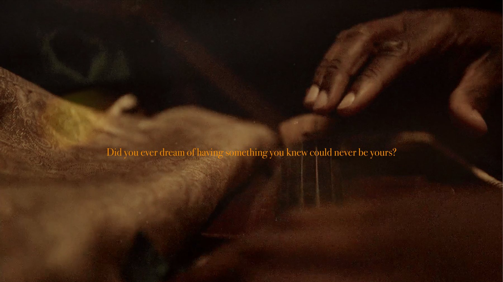
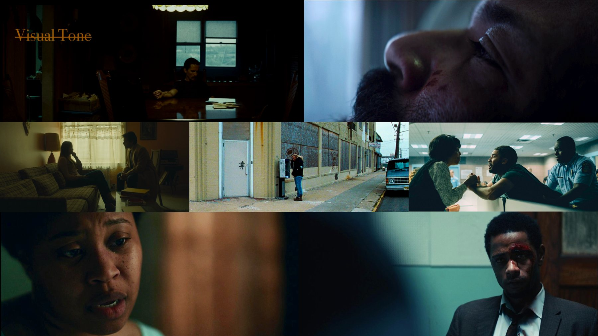
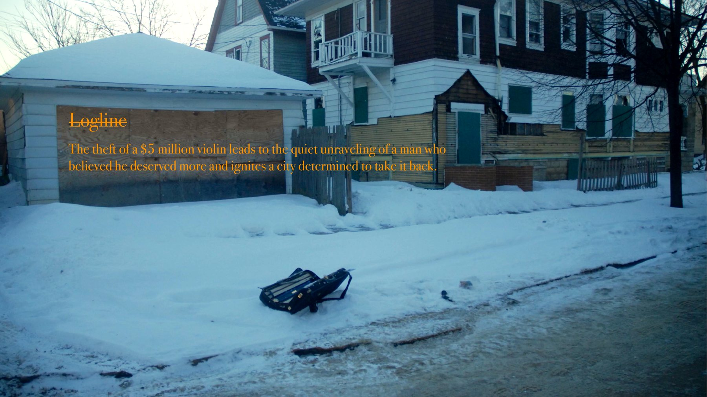
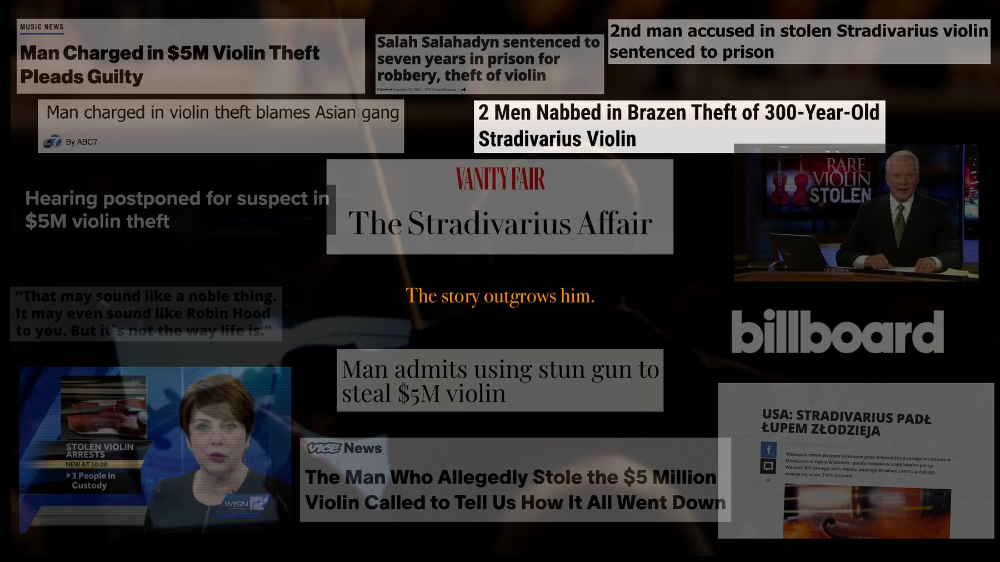
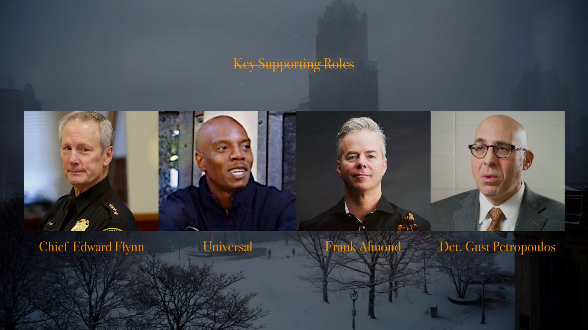
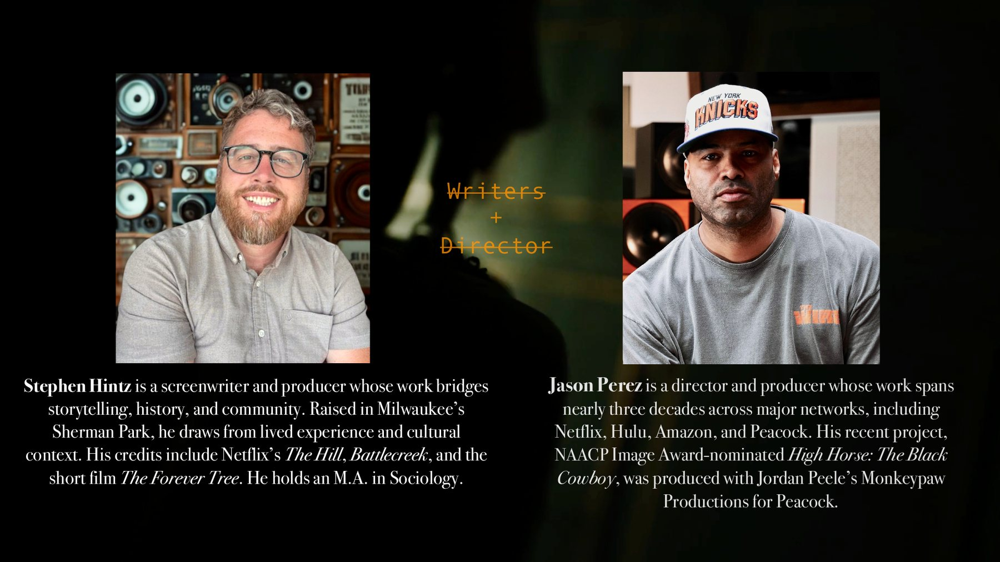

LaKeith Stanfield
Intelligent, restless, and tired of being invisible, Salah sees an opportunity to finally rewrite his story.

True Crime Feature
A $5 million Stradivarius vanishes in Milwaukee. What looks like a headline-ready heist becomes the quiet unraveling of a man who believed one decision could rewrite his life.
Logline

Overview
Salah Salahadyn is not a mastermind. He is not a symbol. He is a man who made a single decision.
Based on a gripping true story, Strings follows Salah, a sharp and restless man surviving on the margins. Drawn to beauty, craftsmanship, and history, he sees the Stradivarius on loan to the Milwaukee Symphony Orchestra as more than an object. He sees a way out.
What he imagines as leverage becomes a trap. As two seasoned detectives close in, the story turns from spectacle to psychology: pride, dignity, desperation, and the dangerous belief that one bold act can transform a life.
This is not a glamorous heist. It is a man wagering his life on one decision.
Tone & Sound
The point of view stays anchored to Salah. The audience learns things when he does, not ahead of him. Scenes linger past comfort, allowing moments to settle instead of resolve.
Sound carries the dread: breath, fluorescent hum, ambient room tone, and the scrape of violin strings. Music is used carefully, not to replace silence, but to deepen it.

Wood tones and amber light when Salah's world feels safe.
Blue-gray Milwaukee winter as pressure tightens.
Negative space, restraint, and the absence of easy relief.
The Case



Casting Vision
Intelligent, restless, and tired of being invisible, Salah sees an opportunity to finally rewrite his story.
A seasoned homicide detective with a quiet, methodical presence. He watches more than he postures.
Practical, guarded, fiercely protective, and the emotional center as the investigation tightens.

Writers + Director
Stephen Hintz is a screenwriter and producer whose work bridges storytelling, history, and community. Raised in Milwaukee's Sherman Park, he draws from lived experience and cultural context. His credits include Netflix's The Hill, Battlecreek, and the short film The Forever Tree.
Jason Perez is a director and producer whose work spans nearly three decades across major networks including Netflix, Hulu, Amazon, and Peacock. His recent project, the NAACP Image Award-nominated High Horse: The Black Cowboy, was produced with Jordan Peele's Monkeypaw Productions for Peacock.